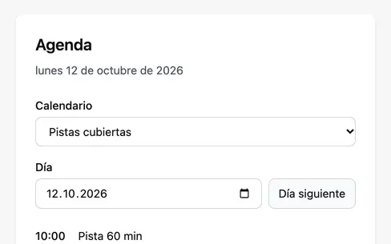
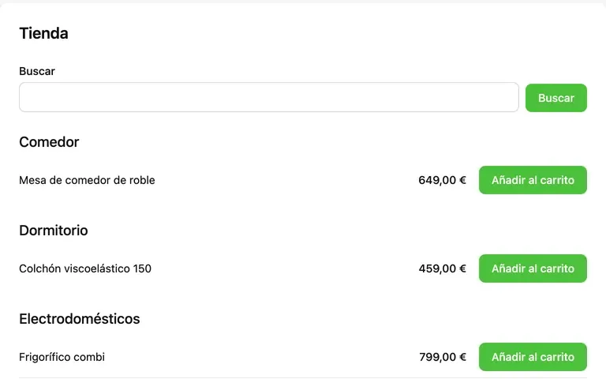
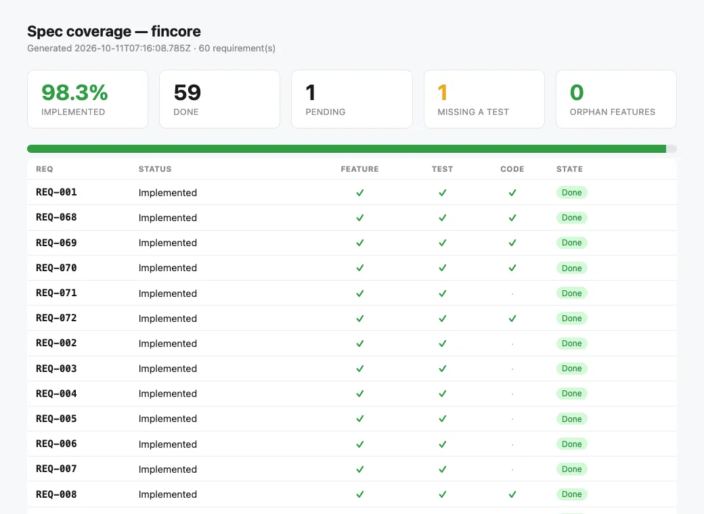
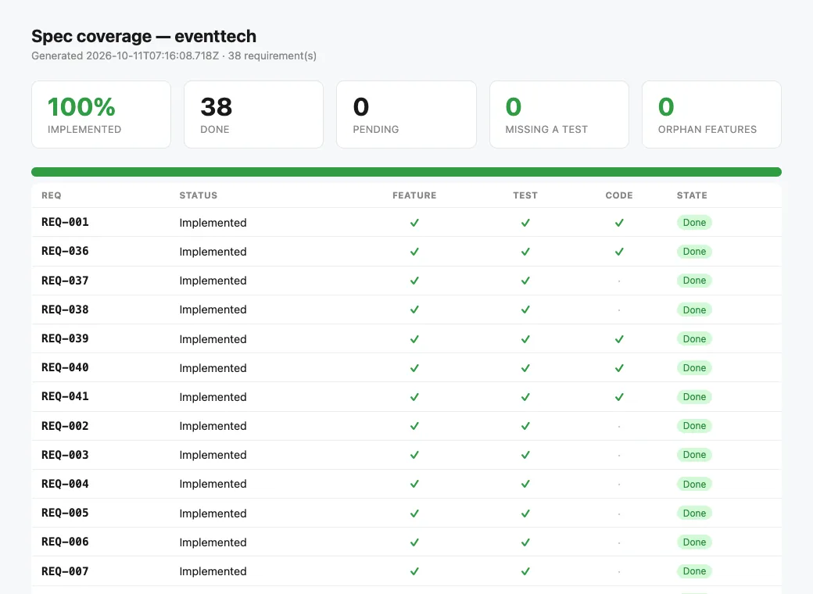
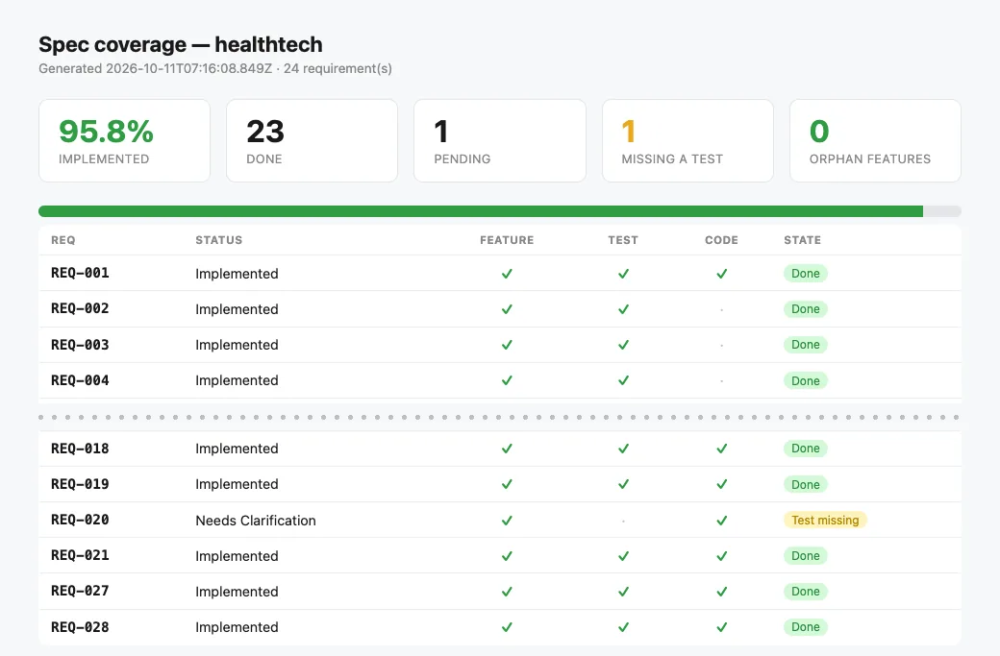
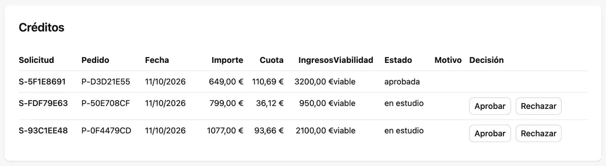
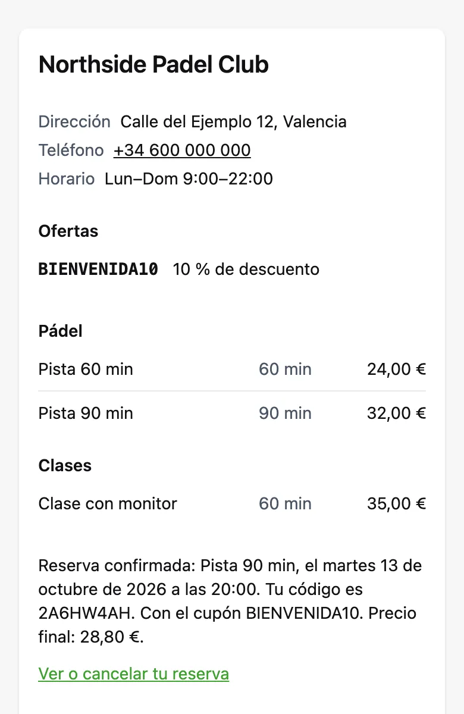

A gate that can't be talked round
apply writes nothing while the gate fails. An agent that
rewrites a scenario to pass its own test fails the attempt, with the
diff fed back.
[ v0.23.0 ] — A change, a brief or a Jira ticket, to proven requirements
Specgate turns a change you describe, a client's brief or a Jira story into requirements and Gherkin scenarios, stops your agent from inventing what the source never said, and refuses to call anything finished until a test proves it — the same gate on your laptop and in CI.
Get started See it on six real products
npm install --save-dev @rsaglobaltech/specgate
npx specgate init # in your project: touches no code
npx specgate # where you stand, and what to run nextZero runtime dependenciesAny agent CLIMITEvery command tested end to end on Linux, macOS and Windows
Most teams already write requirements. They live in a wiki, drift from the code within a sprint, and nothing fails when they disagree. Point a coding agent at that and you have automated the drift — at the speed of an agent.
Specgate makes the specification a thing that can be wrong:
every requirement has a scenario — a concrete example in Gherkin —
every scenario a test that names it, and specgate check
fails the moment one link breaks. Then, and only then, an agent is
worth pointing at it.
The pipeline
Where the work comes from: a change you describe, a brief for a new product, or a Jira story with acceptance criteria. Each opens a change — a folder that holds the work until it is built.
specgate propose
You or your agent write the requirements and scenarios the change adds. Every value the brief or ticket never gave is listed as an assumption or becomes a question.
--from-brief · --from-ticket
A test that names REQ-007 is the link. The table of
links — the traceability matrix — is generated from what your tests
say; nobody edits it.
// REQ-007
The specification, its links to tests and your own suite. A requirement is done only when all three pass — for a person, an agent or CI. A change is archived into the specification once all of its requirements are.
specgate apply · archive · check
Where it fits
Specgate covers the Dev side, from plan to release: what to build, and when it is done. Its sister tool, forja, builds the project that code lands in. Running and watching production stays with your platform; what it learns comes back as a requirement.
Specgate
A change, a brief or a Jira ticket becomes requirements with scenarios. What the source never said becomes a question, not a guess.
specgate propose
Specgate harness · forja
forja writes each use case where the architecture expects it; Specgate's harness hands your agent one requirement at a time, each in its own git worktree.
forja add usecase · specgate harness run
forja
A project that builds and boots on the first run: Node monorepo or a Spring Boot / Quarkus API.
forja init
Specgate · forja
Tests from the first commit. A requirement is done only when a test names it and the suite passes.
specgate apply REQ-007
Specgate
The same gate before every merge, and a page that says where the product stands.
specgate check · report
forja
Production Dockerfiles for the Java API and the web app. Shipping them is your platform's job.
forja init --extras docker
Your platform
Running it: hosting, scaling, incidents. Neither tool does this, and neither pretends to.
—
Your platform
Metrics and user feedback. What they reveal comes back as a new requirement, and the loop starts again.
specgate propose <change>
Your journey
Work comes in three ways — a change you describe
(specgate propose <change-id>), a brief for a new product
(specgate propose --from-brief), or a Jira story
(specgate propose --from-ticket <KEY>) — and follows one
lifecycle: propose, build and apply each requirement, archive, open
the pull request. From a Jira ticket →
Pick where you start. Each phase says who does the work — you, your agent or the gate — what to run, what you see, and what you have when it is over.
Phase 1 about 5 minutes
Create the project with your own tools — npm init, Spring Initializr, cargo new — then let Specgate set itself up in place. It writes specifications, never application code.
$ npx @rsaglobaltech/specgate@latest init
+ spec.md
+ AGENTS.md
+ docs/specs/traceability.md
$ specgate config set test_cmd "node --test"
✔ test_cmd = node --test
$ specgate check
✔ Specification validate --strict
✔ Tests node --test
✔ Gate passedYou now have a specification, an agent contract every coding agent reads, and a gate that already runs your tests.
From scratch · phase 1, step by step →Phase 2 an hour per module
Save the client's brief — or your own plan — as docs/brief.md. specgate propose --from-brief names its modules and the next one to draft. specgate propose --from-brief bookings opens that module as a change — a folder for the requirements it adds — and writes the prompt for your agent. Run the same command again to check the draft: it stops on any value the brief never gave. What only the client can answer becomes a question, not a guess. A person reviews the draft; it stays open until its requirements are built.
$ specgate propose --from-brief bookings
✔ Draft draft-bookings opened · REQ ids REQ-002…REQ-011 reserved
$ specgate propose --from-brief bookings --agent "claude -p"
✖ D6_unlisted_value SCN-005 states "5", which is not in the brief
# the fee becomes a question for the client
$ specgate propose --from-brief bookings
✔ Ready to review
3 ➜ specgate apply its requirements, one at a time;
then specgate archive draft-bookingsYou now have requirements and Gherkin scenarios a person reviewed, every invented value either sourced or asked about — in an open change, counted by status, ready to build.
Phase 3 per requirement
specgate status names the single next command to run — the open change's requirements included. Write the test first and name the requirement in it — that mention is the link; until then apply refuses. Build it by hand, or hand it to the harness, Specgate's runner for your agent: one branch per requirement, and it stops if the gate says no.
$ specgate status
To do ──────────────────────────────
○ REQ-002 A member books a court for one hour
Waiting for an answer ──────────────
○ REQ-004 A member cancels a booking an answer to Q1
$ specgate apply REQ-002
✖ REQ-002 has no test that names it yet (TDD-1). [apply_no_test]
$ node --test
✔ REQ-002 SCN-002: booking a free court lasts one hour
$ specgate harness run --req REQ-003
your agent, in its own git worktreeYou now have code and a test that names its requirement — on a branch, waiting for your review.
From scratch · phase 3, step by step →Phase 4 seconds
apply runs the gate for that requirement and marks it Implemented only if it passes. A requirement waiting for the client cannot be closed — and neither can its change: archive merges it into the specification only once every requirement in it is Implemented, on your branch, before the pull request. report turns it all into one page for the product owner.
$ specgate apply REQ-002
✔ Specification the gate, for REQ-002
✔ Tests node --test
✔ REQ-002 → Implemented
$ specgate apply REQ-004
✖ REQ-004 not marked Implemented: REQ-004 is waiting
for an answer (Needs Clarification).
$ specgate archive draft-bookings
✖ Change 'draft-bookings' has 2 requirement(s) not delivered yet
fix: specgate apply REQ-003
$ specgate report --out report.html
✔ Wrote report.html
█████░░░░░░░░░░░░░░░ 1 of 4 implementedYou now have a requirement marked done because a test proved it, a change that closes when its last one is — and a page that says where the product stands.
From scratch · phase 4, step by step →Phase 5 four verbs
Put the gate on every pull request — the specification, then your tests. This is what CI runs, and it is the same command you run locally. From then on the loop is four verbs: specgate propose a change — from your own words, the brief or a Jira ticket — write its delta (the requirements it adds) and a test that names each requirement, specgate apply it, specgate archive the change when the last one is in, and open the pull request. specgate status always says where you are. In a small project, specgate new adds a single requirement without a change.
$ specgate ci init --provider github
+ .github/workflows/spec-gate.yml
✔ CI gate installed
$ specgate propose free-courts
✔ Change free-courts created · lite · REQ ids REQ-012…REQ-014 reserved
➜ specgate apply
after you write the delta, a test that names each
requirement, and the code
$ specgate propose --from-ticket KAN-13
# a Jira story: its own change and branch, feature/KAN-13-…You now have a gate on every pull request, and a loop small enough to remember, whatever the work comes from.
From scratch · phase 5, step by step →Phase 1 about 5 minutes
onboard reads your build files and proposes the capabilities — areas of the product, such as invoices — your layout already implies. init adopts the repository in place — specifications only, not a line of your code — and the gate runs your existing tests.
$ specgate onboard
3. Capabilities this codebase already implies
· Invoices src/invoices (2 files)
· Customers src/customers (1 files)
$ specgate init
Existing code found (package.json) — adopting this
repository in place. Nothing in your code is touched.
$ specgate check
✔ Gate passedYou now have a specification seeded from your own layout, an agent contract, and a green gate over the tests you already had.
Existing project · phase 1, step by step →Phase 2 minutes per behaviour
Don't back-fill everything. Pick one behaviour your users depend on and propose it as a change. Write its delta — the requirements and scenarios the change adds: one requirement, with a real example in the numbers your code already produces.
$ specgate propose invoice-rounding
✔ Change invoice-rounding created · lite · REQ ids REQ-004…REQ-006 reserved
+ docs/specs/changes/invoice-rounding/specs/invoice-rounding/spec.md
# the delta, written by you or your agent
### Requirement: REQ-004 — An invoice total is rounded to the cent
#### Scenario: SCN-002 — Three lines at 21% VAT
- WHEN its total is computed at 21% VAT
- THEN the total is 35.56You now have one behaviour written down as a requirement and a scenario anyone can read, in an open change.
Existing project · phase 2, step by step →Phase 3 minutes
apply refuses while nothing proves it. Name the requirement in the test you already have — that is the whole link — and run it again. Once the test and your suite pass, it is marked Implemented; then archive merges the change into the specification, before the pull request.
$ specgate apply REQ-004
✖ REQ-004 has no test that names it yet (TDD-1). [apply_no_test]
test("REQ-004: three lines at 21% VAT are rounded…")
$ specgate apply REQ-004
✔ REQ-004 → Implemented
$ specgate archive invoice-rounding
✔ Archived as 2026-01-01-invoice-roundingYou now have your first requirement proved by a test that already existed, and part of the specification.
Existing project · phase 3, step by step →Phase 4 one commit
Requirements still in Draft owe nothing yet, so you don't have to fix the past first. The job runs on every pull request: the specification, then your tests. Make it a required check, and a red gate blocks the merge.
$ specgate ci init --provider github
+ .github/workflows/spec-gate.yml
$ specgate check
✔ Specification validate --strict
✔ Tests node --test
✔ Gate passedYou now have a gate that protects what you have proved and ignores what you haven't written down yet.
Existing project · phase 4, step by step →Phase 5 one change at a time
Every piece of work opens a change: a bug fix or a rule you touch with specgate propose <change-id>, a Jira story with specgate propose --from-ticket <KEY>, a new area from a brief with specgate propose --from-brief. Then build, apply, archive, and open the pull request. status always says what to run next.
$ specgate status
Requirements █████░░░░░░░░░░░░░░░ 1 of 4 done
$ specgate propose --from-ticket KAN-13 --check
# is the story ready? acceptance criteria, measurable, small enough
$ specgate propose --from-ticket KAN-13
# its change, and its branch feature/KAN-13-…You now have coverage that grows with the work you were doing anyway.
Existing project · phase 5, step by step → From a Jira ticket, step by step →Already on OpenSpec? Keep it — Specgate can verify what it calls done →
Why teams pick it
apply writes nothing while the gate fails. An agent that
rewrites a scenario to pass its own test fails the attempt, with the
diff fed back.
What the brief cannot answer is asked, not guessed. The requirement it blocks waits for an answer — no person and no agent can close it in the meantime.
specgate propose --from-brief lists every value nobody gave you. On a
five-line brief that list is long — and it is exactly the conversation
to have with the client.
The harness drives any CLI that takes a prompt, one git worktree per
requirement. It never talks to a model itself, and merges only when you ask for a
--chain.
The gate runs the test command you already have. Proven on Node, Spring Boot and Quarkus; it adopts a repository without touching a line of its code.
A test that mentions REQ-007 is the link. The matrix is
derived from what your tests say, so it cannot drift from them.
Not a mockup
Three real runs of this version of the CLI, recorded and checked against it at every release: every refusal you see is still a refusal.
A four-sentence brief. The agent's draft invents a fee; the drafting checklist catches it, and the fee becomes a question for the client.
~/courts $ cat docs/brief.md
---
product: Court bookings for a tennis club
surfaces: [api]
actors:
- { name: Member, surfaces: [api] }
modules: [bookings]
---
# Brief
Members book a court for one hour. A court cannot be booked twice for
the same hour. Members can cancel a booking. Late cancellations may be charged.
~/courts $ specgate propose --from-brief bookings
◆ specgate · propose --from-brief bookings docs/brief.md
3 requirement(s) · 4 scenario(s)
✖ D6_unlisted_value SCN-002 states "201", which is not in the brief and not listed as an assumption for SCN-002 or REQ-002.
fix: List it in assumptions.md with SCN-002 (or REQ-002) in its row, or use the value the brief gives.
✖ D6_unlisted_value SCN-004 states "court already booked", which is not in the brief and not listed as an assumption for SCN-004 or REQ-003.
fix: List it in assumptions.md with SCN-004 (or REQ-003) in its row, or use the value the brief gives.
✖ D6_unlisted_value SCN-004 states "409", which is not in the brief and not listed as an assumption for SCN-004 or REQ-003.
fix: List it in assumptions.md with SCN-004 (or REQ-003) in its row, or use the value the brief gives.
✖ D6_unlisted_value SCN-005 states "204", which is not in the brief and not listed as an assumption for SCN-005 or REQ-004.
fix: List it in assumptions.md with SCN-005 (or REQ-004) in its row, or use the value the brief gives.
✖ D6_unlisted_value SCN-005 states "5", which is not in the brief and not listed as an assumption for SCN-005 or REQ-004.
fix: List it in assumptions.md with SCN-005 (or REQ-004) in its row, or use the value the brief gives.
✖ 5 finding(s) to fix — each says how; DRAFTING.md has the formats
What now ───────────────────────────────────────────────
… 2 more lines
~/courts $ git diff -U0 docs/specs/changes/draft-bookings/specs | grep -E '^[-+]' | grep -vE '^(---|[+]{3}) '
-<!-- specgate:trace actor=Member kind=functional -->
+<!-- specgate:trace actor=Member kind=functional status="Needs Clarification" -->
-fee of 5 euros when they cancel less than 24 hours before.
+late cancellation the fee the club decides (Q1).
-- THEN the response is 204 and a fee of 5 euros is charged
+- THEN the response is 204 and the late-cancellation fee is charged
~/courts $ cat docs/specs/changes/draft-bookings/questions.md
# Open questions
| # | Question | Blocks | Options seen |
|---|---|---|---|
| Q1 | How much is a late cancellation, and how late is late? | REQ-004 | A flat fee · the full hour · nothing in the first season |
~/courts $ specgate propose --from-brief bookings
◆ specgate · propose --from-brief bookings docs/brief.md
3 requirement(s) · 4 scenario(s)
✔ Ready to review
What now ───────────────────────────────────────────────
1 Read docs/specs/changes/draft-bookings/specs/ with whoever knows the business
2 Answer what you can in docs/specs/changes/draft-bookings/questions.md
3 ➜ specgate apply its requirements, one at a time; then specgate archive draft-bookings
… 1 more lines
~/courts $ specgate status
◆ specgate · status courts
Requirements ░░░░░░░░░░░░░░░░░░░░ 0 of 4 done
To do ──────────────────────────────────────────────────
○ REQ-001 Preserve existing behaviour a test and code
○ REQ-002 A member books a court for one hour a test and code
○ REQ-003 A court is never booked twice for the same … a test and code
Waiting for an answer ──────────────────────────────────
○ REQ-004 A member cancels a booking an answer to Q1
Questions: Q1 (docs/specs/changes/draft-bookings/questions.md)
Brief ████████████████████ 1 of 1 module(s) drafted docs/brief.md
Next ───────────────────────────────────────────────────
… 2 more lines
Calling a requirement done before it has a test, and closing one that is still waiting for the client. Both refused.
~/courts $ specgate apply REQ-002
◆ specgate · apply REQ-002 Implemented
✖ REQ-002 REQ-002 has no test that names it yet (TDD-1). [apply_no_test]
fix: write a test that names REQ-002 (and its scenario SCN-002), then run specgate apply REQ-002
~/courts $ cat test/bookings.test.js
const test = require("node:test");
const assert = require("node:assert");
const { book, list } = require("../src/bookings");
test("REQ-002 SCN-002: booking a free court lasts one hour", () => {
assert.deepEqual(book("ana", "centre", "mon-18"), { status: 201, minutes: 60 });
});
test("REQ-002 SCN-003: a member sees their bookings", () => {
assert.equal(list("ana").length, 1);
});
~/courts $ specgate apply REQ-002
◆ specgate · apply REQ-002 Implemented
✔ Specification the gate, for REQ-002
✔ Tests node --test
✔ REQ-002 → Implemented (1 row updated)
… 4 more lines
~/courts $ specgate apply REQ-004
◆ specgate · apply REQ-004 Implemented
✖ REQ-004 not marked Implemented: REQ-004 is waiting for an answer (Needs Clarification). [done_needs_clarification]
fix: Answer the question that blocks it in its change's questions.md, remove `status="Needs Clarification"` from its `specgate:trace`, write its test, then run `specgate apply`.
~/courts $ specgate archive draft-bookings
✖ draft-bookings Change 'draft-bookings' has 2 requirement(s) not delivered yet: REQ-003, REQ-004. [archive_requirements_pending]
fix: specgate apply REQ-003
~/courts $ specgate check
◆ specgate · check courts
· Ids not compared with a base — no base branch (pass --base <branch>)
✔ Specification validate --strict
✔ Tests node --test
· Architecture not checked — specgate config set arch_cmd "<command>"
✔ Gate passed — the specification and `node --test`
For teams that reuse requirements across products: a project generated from a seven-line config, a domain pack — a reusable set of requirements and scenarios — installed and pinned, then the harness hands one requirement to an agent in its own git worktree.
~ $ cat smart-parking.yaml
PROJECT_NAME: Smart Parking
PROJECT_SLUG: smart-parking
PROJECT_TYPE: backend
DOMAIN: parking operations
STACK: Node 20, Express, PostgreSQL
API_STYLE: REST with DTO boundaries
TESTING: node:test
~ $ specgate init --config ./smart-parking.yaml --out . --no-git
◆ specgate · init
ℹ 🧩 Rendering base template
ℹ 🛠️ Applying project type template: backend
ℹ 🧩 No optional modules selected. Generating base + project-type features only.
Summary ────────────────────────────────────────────────
· Project: Smart Parking
· Slug: smart-parking
· Type: backend
· Domain: parking operations
· Output: ~/smart-parking
· Dry-run: false
· Git: skipped
… 4 more lines
~/smart-parking $ specgate specops add --pack-root ~/packs --pack multi-tenant/backend --var "PROJECT_NAME=Smart Parking" --var PROJECT_SLUG=smart-parking --var "DOMAIN=parking operations"
ℹ Adding multi-tenant/backend to ~/smart-parking
ℹ Using pack: ~/packs/multi-tenant/backend/pack.yaml
ℹ Generated 3 scenario file(s).
ℹ Domain pack expansion completed.
~/smart-parking $ specgate plan
◆ specgate · plan
Requirements ░░░░░░░░░░░░░░░░░░░░ 0 of 5 done
Needs Test + Code ──────────────────────────────────────
REQ-002 SCN-001
✔ feature `features/multi-tenant/provisioning_a_tenant_emits_tenantprovisioned.feature`
REQ-001 SCN-002
✔ feature `features/multi-tenant/cross_tenant_read_attempts_are_rejected.feature`
REQ-003 SCN-003
✔ feature `features/multi-tenant/exceeding_a_quota_emits_quotaexceeded.feature`
Needs Feature File ─────────────────────────────────────
REQ-004 -
○ feature -
… 5 more lines
~/smart-parking $ cat harness.config.yaml
harness_version: 1
agent: 'specgate-stub-agent {prompt_file}'
test_cmd: 'node --test test/*.test.js'
max_attempts: 1
~/smart-parking $ specgate harness run --req REQ-000
◆ specgate · harness run 1 requirement(s) from HEAD
◇ REQ-000 attempt 1/1
Harness report ─────────────────────────────────────────
✔ REQ-000 pass 1 attempt → harness/REQ-000
████████████████████ 1 of 1 passed 1 passed · 0 failed · 0 skipped
Run recorded in .harness/runs/2026-01-01T00-00-00-000Z.json — specgate harness report sums them up
Next ───────────────────────────────────────────────────
➜ git diff HEAD...harness/REQ-000
review and merge the harness/* branches you trust
~/smart-parking $ git diff --stat main harness/REQ-000
.../REQ-000-2026-01-01T00-00-00-000Z-attempt-1-agent.md | 106 ++++++++++++++++++++++++
docs/specs/traceability.md | 2 +-
spec.md | 2 +-
src/health.js | 9 ++
test/health.test.js | 11 +++
5 files changed, 128 insertions(+), 2 deletions(-)
~/smart-parking $ git switch -q harness/REQ-000 && node --test test/*.test.js
✔ REQ-000 SCN-000: GET /health reports the service as UP (12ms)
ℹ tests 1
ℹ suites 0
ℹ pass 1
ℹ fail 0
ℹ cancelled 0
ℹ skipped 0
ℹ todo 0
ℹ duration_ms 1.234
~/smart-parking $ specgate validate .
◆ specgate · validate smart-parking
✔ Validation passed
· Features detected: 4
· Base SDD structure: complete
· Traceability mode: rich
Proven on real products
Each one started from a brief a real client sent — vague, detailed, architecture-heavy, regulated — and was built end to end by a coding agent driving Specgate. They are not customer deployments, and the code is private. What they prove is the method, and each report lists what Specgate got wrong along the way.
Requirements delivered
229
across three stacks — Next.js, Spring Boot and Quarkus. Two are left open on purpose: only the client can answer them.
@REQ-204 @SCN-215 Scenario: a failed inspection takes the forklift out of service Given forklift "FL-07" in service When POST /api/forklifts/FL-07/ inspections with "brakes" failed Then 201, and FL-07 is "OUT_OF_SERVICE"
Detailed brief · six packs
A field app for a rebar crew
47 of 47 requirements · 599 tests
Every requirement done and the product unusable — no routes, no screens. The checklist now asks for an API and a screen scenario per actor.
Read the project →
Detailed brief · screenshots
Appointments for local businesses
38 of 38 requirements · 5 cycles
Each cycle ended by using the product: an agenda that only showed today, no menu, a job open to anyone.
Read the project →
Five-line brief
Credit, an online store and a sales network
24 of 24 requirements · 272 tests
Every test green and nobody could buy: no “Add to cart” button. An API scenario alone is built as an API.
Read the project →
Architecture-heavy brief
Core banking
59 of 60 requirements · 112 tests
1 waiting for an answer
The app did not start with the gate green. A startup test with no doubles now runs in the suite.
Read the project →
Architecture-heavy brief
Event operations, rebuilt from facts
38 of 38 requirements · 71 tests
Nobody could see a session's free seats. Two requirements came back as MODIFIED changes.
Read the project →
Regulated domain
Clinical cases
23 of 24 requirements · 35 tests
1 waiting for an answer
Two reads left no trace in the access log. Drug interactions wait for the client instead of a guess.
Read the project →

Real screens from the pilots, with invented data. Their interfaces are in Spanish, as their clients asked.
All six projects, compared → Seven of their modules, as installable packs →
For the product owner
specgate report turns the matrix into a page
anyone can read: what is done, what is pending, what is missing a test.
This is the clinical-cases pilot as it stands — one requirement left
open on purpose, because only the client can say which drug
interactions to check.
The harness · unattended delivery
specgate harness run takes each pending
requirement in its own git worktree, hands your agent a prompt built from
its Gherkin, runs the gate on the result, and commits only if it is
green. It does not merge — the branch is yours to merge or throw away —
unless you run a --chain, which merges each green requirement
and stops at the first red one. The agent is any shell command; there is
no runtime or SDK. specgate studio shows the run at
/live, as it happens (the harness).
harness/REQ-002
1 ✔
✔ committed on its branch
harness/REQ-003
1 ✖ SCN-004failures → next prompt2 ✔
✔ committed on its branch
harness/REQ-005
1 ✖2 ✖3 ✖
wip(REQ-005): FAILED the gate · stays Draft
A branch named after it, so a bad attempt never touches your checkout.
The gate's findings go back to the agent, up to max_attempts.
A requirement waiting for the client is skipped, not guessed.
specgate harness report: first-attempt rate and time per delivered requirement.
specgate harness run --agent "claude -p < {prompt_file}"
specgate harness run --agent "aider --yes --message-file {prompt_file}"
specgate harness run --agent "./my-wrapper.sh {prompt_file}"
Wired from one definition
claudeclaude-plugincursorcopilotwindsurfaidergeminiclinecodexantigravityopencode
Watch a real run → How the harness works → Choosing your agent →
Green on the day you adopt it, stricter with every requirement you deliver — and a green run always says what it did not check.
Draft
Except honesty: no scenario without steps, no keyword Cucumber would read as prose.
Needs Clarification
From the client. Until then the harness skips it and apply
refuses it.
In progress
One that mentions it — the moment work on it has started.
Implemented · Verified · Released
Every file it points at exists, its scenario has real steps, and the suite is green.
Evidence
Each one exists because the loop was caught approving work it had not checked — found by running the tool on real projects, and now a test that fails when the guard is removed.
1 passed · 0 failed.
Now touching spec.md or features/** fails the
attempt, with the diff fed back.apply, closed one still
waiting for the client, with no test behind it. Now it
refuses, and status lists it apart with the question that
blocks it.GIVEN parsed as prose — and an empty scenario passes. The
gate now refuses a scenario Cucumber would see as empty.If you know OpenSpec
OpenSpec made the change loop popular, and it is the tool to look at first. Specgate uses the same three verbs — propose, apply, archive — with a gate under each. OpenSpec checks the shape of your specification and leaves the proof to you. Specgate is the proof.
When an agent says “done”
OpenSpecArchive asks to continue if tasks are unticked; --yes skips it. Verify is an AI review that “won't block archive”.
Specgateapply refuses until a test names the requirement and your suite passes; archive refuses while one is pending, and no flag skips it.
When the draft comes from a client's brief
OpenSpecThe prompt asks the agent not to invent intent. Nothing checks it.
Specgatespecgate propose --from-brief stops on a fee, limit or number the brief never stated.
When only the client can answer
OpenSpecThe agent records an assumption and carries on.
SpecgateNeeds Clarification blocks building and closing it until someone answers.
When you hand the work to an agent
OpenSpec/opsx:apply works through the tasks in your session.
Specgateharness run: one branch per requirement, the gate after each attempt; it merges only with --chain, and only what passed.
Where OpenSpec is ahead: far more users,
30+ agent integrations against our 10, customisable workflows, and no
tests required to start. If you want the change loop and nothing else,
it is the better tool. Already on it? Keep it, and let
specgate verify gate what it archives.
Specgate or OpenSpec, in detail → Spec Kit, Cursor rules and the rest →
Yes, that is the common case. specgate init adopts it in
place without touching your code, and the gate is green the same day:
a Draft requirement owes nothing yet.
Safer than letting it write the code from the brief. The checklist lists every value the agent added, and anything nobody can answer becomes a question that blocks its requirement. You review a short list, not the whole draft.
Yes. specgate propose --from-ticket KAN-13 checks the story
is ready — acceptance criteria present, measurable, small enough —
then opens a change from it and pushes its branch. Specgate only reads
Jira; the board moves through your own Jira automation.
From a Jira ticket →
No. A bugfix or a refactor that does not change contracted behaviour adds none; the gate only asks for what delivered requirements owe.
Not quietly. Over MCP, tools that write the specification refuse unless a change is open; in the harness, touching the spec fails the attempt.
Not unless you ask. By default it leaves one branch per requirement and
stops: merging is a judgement, and it stays yours. With
--chain it merges each requirement that passed the gate,
runs the gate again on the merge, and stops at the first failure.
npm install --save-dev @rsaglobaltech/specgate
npx specgate init
npx specgate propose --from-brief↑↓ to navigate · ↵ to open · Esc to close